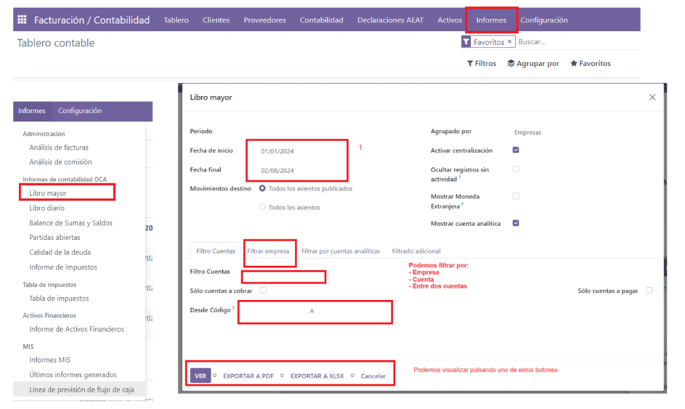
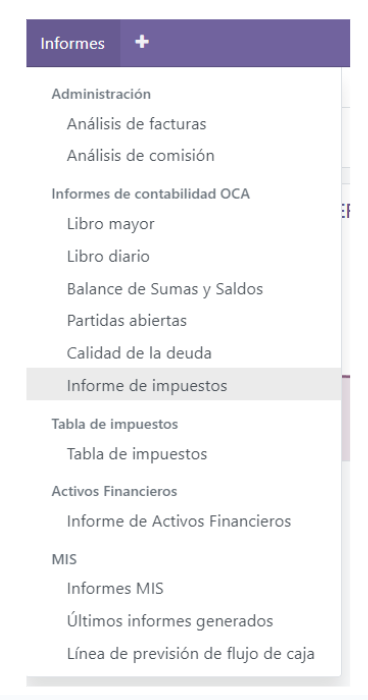
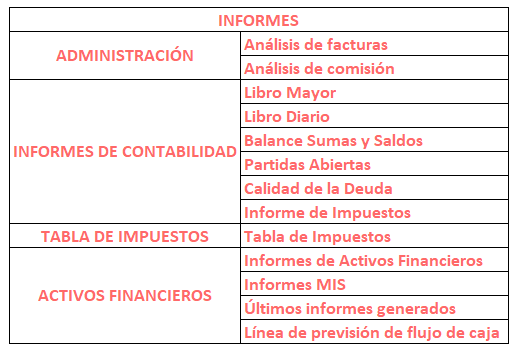

Contabilidad y facturación¶
La aplicación Facturación de Odoo es una aplicación autónoma para crear facturas, enviárselas a sus clientes y gestionar pagos.
Contabilidad de Odoo es una aplicación con funciones de contabilidad completas. La productividad contable es el enfoque al desarrollar las diferentes funciones, como facturas reconocidas por inteligencia artificial, sincronización con sus cuentas bancarias, coincidencias inteligentemente sugeridas, etc.
Get started
Basic concepts of accounting and initial setup of your accounting
Taxes
Taxes, fiscal positions, and integrations
Customer invoices
Customer invoices, payment terms, and electronic invoicing
Vendor bills
Vendor bills, assets, and invoice digitization (OCR)
Payments
Invoices and bills payments (online, checks, batches) and follow-up on invoices
Bank and cash accounts
Bank synchronization, reconciliation, and cash registers
Reporting
Reporting, declarations, and analytic accounting
Contabilidad de doble entrada¶
Odoo crea de manera automática todos los asientos de diarios de todas las transacciones de contabilidad, como facturas, órdenes del punto de venta, gastos, valoraciones del inventario, etc.
Odoo usa el sistema de partida doble, donde cada asiento requiere una contraparte en una cuenta diferente, con una cuenta de débito y otra de crédito. De esta manera nos aseguramos de que todas las transacciones se registran debidamente y de que todas las cuentas siempre están balanceadas.
Ver también
Base de devengo y efectivo¶
En Odoo es posible llevar la contabilidad con base de devengo y de efectivo. De esta manera podrá reportar un ingreso y un gasto ya sea cuando ocurra una transacción (base de devengo) o cuando se reciba un pago (base de efectivo).
Ver también
Multiempresa¶
Es posible gestionar varias empresas dentro de una misma base de datos de Odoo. Cada empresa tiene su propio plan de cuentas, que también es útil para generar reportes de consolidación. Los usuarios tienen acceso a varias empresas, pero solo pueden trabajar en la contabilidad de una empresa a la vez.
Entorno multiempresa¶
En Odoo está disponible un entorno multiempresa con una tasa de cambio automática para facilitar transacciones internacionales. Cada transacción se registra en automático en la divisa de la empresa, para transacciones que se realizan en otra divisa, Odoo guardará el valor tanto en la divisa que se usa en la empresa como la divisa de la transacción en sí. Odoo genera las ganancias y pérdidas de la divisa después de conciliar los apuntes de diario.
Ver también
Estándares internacionales¶
Es posible utilizar Contabilidad de Odoo en más de 70 países. La aplicación contiene los mecanismos y estándares que son comunes en todas las naciones. Además, gracias a que es posible instalar módulos específicos para cada país, es fácil cumplir con todos los requisitos locales. Las posiciones fiscales existen para poder gestionar cuestiones específicas de cada región, como lo es el plan de cuentas, los impuestos y cualquier otro requerimiento.
Ver también
Cuentas por pagar y por cobrar¶
De forma predeterminada, hay una sola cuenta para los asientos de cuentas por cobrar y otra para los asientos de cuentas por pagar. Como las transacciones están vinculadas a sus contactos, puede realizar un reporte por cliente, proveedor o distribuidor.
El reporte del libro mayor de la empresa muestra el balance de sus clientes y proveedores. Lo puede encontrar en .
Informes¶
Estos informes financieros están disponibles y se actualizan en tiempo real:
 Informe de impuestos¶
Odoo calcula todas las transacciones de contabilidad del periodo fiscal específico y usa los totales para calcular las obligaciones relativas a los impuestos.
Importante
Una vez que se crea el reporte de impuestos para un periodo, Odoo lo bloquea y evita que se creen nuevos asientos que incluyan IVA. Si necesita corregir cualquier factura, lo tendrá que hacer en el siguiente periodo.
Sincronización bancaria¶
El sistema de sincronización bancaria se conecta directamente a su institución bancaria, de esta forma puede importar todas las transacciones directamente a su base de datos. Podrá obtener un resumen de su flujo de efectivo sin tener que iniciar sesión en su sistema de banca en línea y sin tener que esperar a que le entreguen sus estados de cuenta físicos.
Valoración del inventario¶
En Odoo se pueden realizar tanto valuaciones de inventario de forma periódica (manuales) o permanente (automáticas). Los métodos disponibles son precio estándar, precio promedio, UEPS y FIFO.